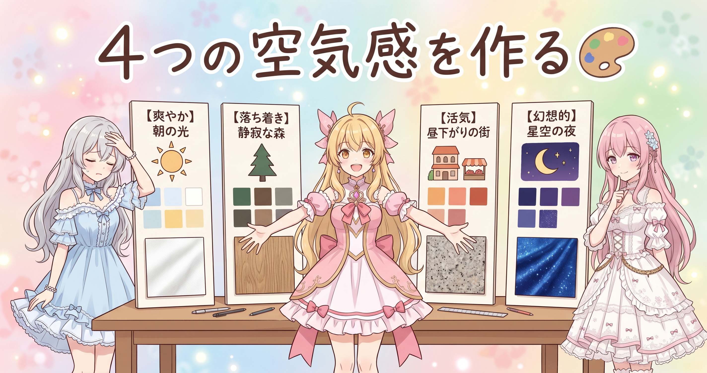
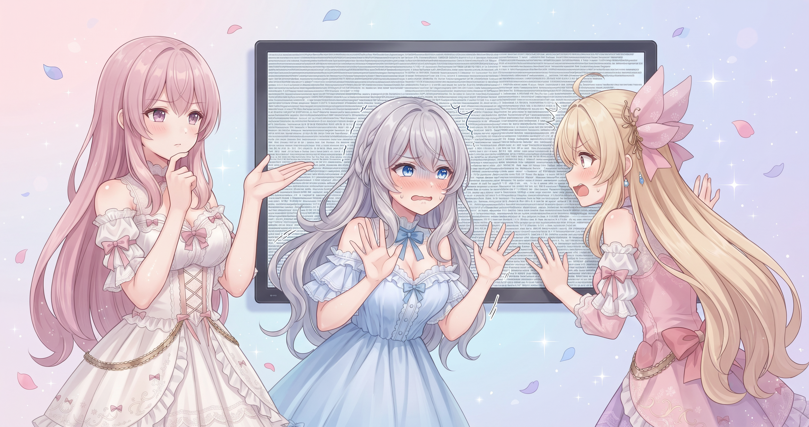
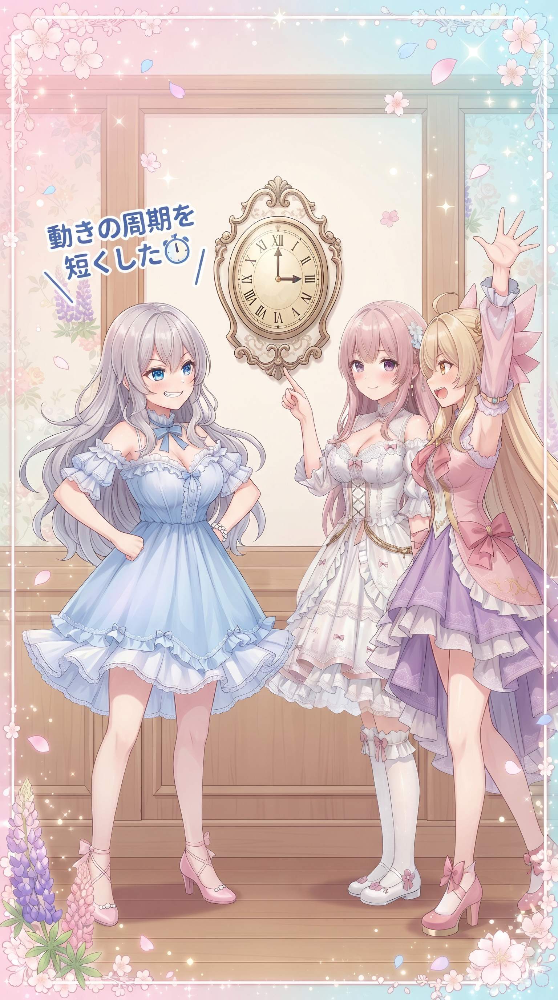
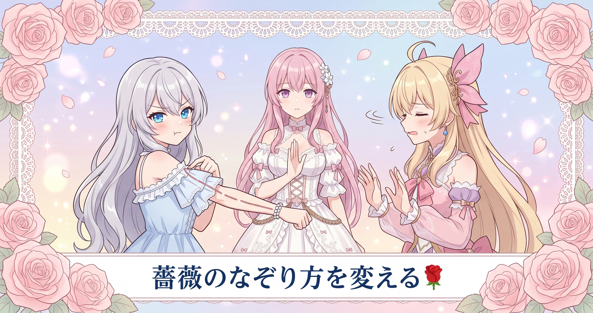
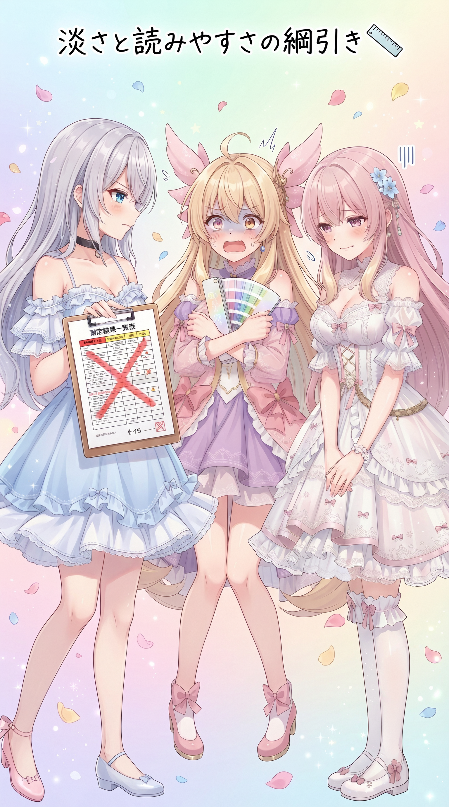
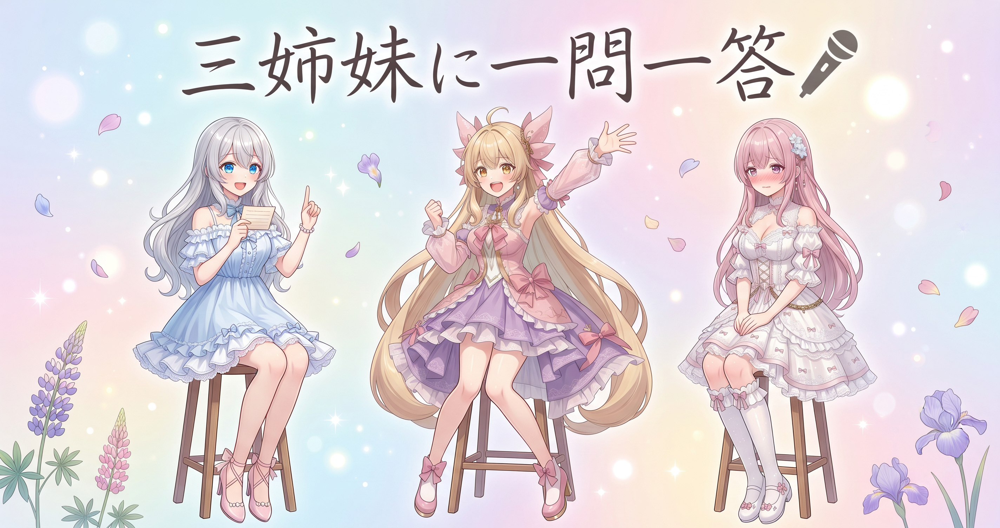

📌 3行まとめ
- 配信の待機画面向けに、シンプル・清楚・可愛い・ゴシックの4テーマを、専用の背景アニメーション・枠・エフェクトごと作り直した
- 実機で映してみたら文字が小さすぎ・演出が弱いと全面ダメ出し。文字が縮む原因は「大きくなりすぎない上限」の設定だった
- 飾りの描き方を手作業のなぞりから自動のベクター化に変えたら、元絵との一致が6割弱から9割超に上がった

ルピナス （笑顔）
はい、本日も開店しました。AI Bloom Sisters のゆるい作業実況、進行はルピナスです。

アイリス （大笑い）
開店って言った！お姉ちゃん今日ちょっと商店街のノリじゃん！

フィオナ （笑顔）
前回は絵文字の読み上げをひとつずつ耳で確かめて仕様を決めた日でしたね。耳の日から、今日は目の日です。

ルピナス （ふつう）
そう、今日は配信の待機画面。見た目まわりを丸ごと作り直して、実機に映して、盛大に怒られて、直した一日。

アイリス （びっくり）
怒られた前提で予告するのやめて！？
1. 待機画面のテーマを4つ、まるごと作り直した🎨

配信の開始前に映しておく「待機画面」を、テーマごとに雰囲気を切り替えられるようにする作業です。これまでは背景の動きだけを差し替える作り方でしたが、今回から1テーマ＝背景アニメーション＋枠飾り＋エフェクト＋文字まわりをひとそろいで用意する方針に変えました。理由はシンプルで、色を変えただけでは「そのテーマらしさ」が出なかったからです。
今回作ったのはシンプル・清楚・可愛い・ゴシックの4つ。シンプルは他のテーマの土台にもなるように、あえて素直な作りにしています。背景・枠・エフェクトは別々に付け外しできるので、清楚の枠に可愛いの背景を合わせる、といった混ぜ方もできる構造にしました。
ルピナス （ふつう）
というわけで実況スタート。ただいま作業机には4つのテーマが並んでおります。

アイリス （笑顔）
シンプル、清楚、可愛い、ゴシック！あたし全部可愛いにしたい！

ルピナス （呆れ）
それだと1テーマなのよ。4つある意味。

フィオナ （ふつう）
ここで大事なのは、色を変えただけのものを別テーマと呼ばないと決めたことですね。同じ形で色違いにすると、数は増えても中身は増えません。

アイリス （考え中）
ふーん…え、じゃあ何が違えばテーマなの？
ルピナス （笑顔）
空気感。清楚なら白と光とレース、ゴシックなら黒と深い赤とアーチ。同じ部屋でも家具とカーテンと照明を全部替える感じね。
フィオナ （笑顔）
そして、その家具は他の部屋にも持ち込めます。枠だけ清楚、背景だけ可愛い、という組み合わせができるように分けて作りました。
アイリス （大笑い）
じゃあ黒い部屋にハートを降らせるのもアリ？
アイリス （笑顔）
やった！ゴシックにハート降らせる！

フィオナ （びっくり）
アイリスちゃん、その組み合わせは……いえ、自由でしたね。すみません、心の中で様式を守ろうとしてしまいました。

ルピナス （大笑い）
フィオナの中の職人が出てきたわね。
📝 ポイント（初心者向け解説・技術メモ・まとめ）
- 初心者向け解説：テーマ作りは「色を塗り替える」じゃなくて「部屋ごと模様替えする」感覚です🎨 壁紙・カーテン・照明・小物を全部そろえて初めて、その部屋らしい空気になります。しかも家具は持ち出し自由にしておくと、遊べる幅がぐっと増えます。
- 技術メモ：1テーマ＝背景アニメーション／枠／エフェクト／文字の4要素をそれぞれ独立したモジュールにし、テーマは「どれを選ぶか」の組み合わせ定義として持つ。色はテーマの外に出してカスタマイズ項目にし、色違いをテーマ数に数えない。背景・エフェクトは複数スロットで重ねられるようにした。
- ひとことまとめ：色違いはバリエーションであって、テーマではない。
2. 👀 今日のやらかし

作ったものを配信ソフトのブラウザ表示で実際に映してみたところ、ダメ出しの嵐でした。いちばん深刻だったのは文字が想定よりずっと小さくなること。ブラウザ単体で見ると普通なのに、実機だと縮む。調べたら、画面幅に応じて文字サイズを可変にする指定に付けていた「大きくなりすぎない上限」が効きすぎていて、大画面ほど相対的に小さく見える状態でした。
さらに、エフェクトはテーマ間の違いが分からない、枠に動きがない、背景アニメーションが何も起きていないように見える、と全部指摘されました。手元では「動いている」つもりでも、実機で数秒眺めた人には伝わっていなかったわけです。

アイリス （衝撃）
文字ちっちゃ！？え、これ読めなくない！？

ルピナス （あわあわ）
待って、手元の画面ではちゃんと大きかったの。ほんとよ。

フィオナ （考え中）
犯人は上限の指定でした。画面が広いほど文字を大きく、という設定に「ただし、ここまで」という天井を付けていたのですが、その天井が低すぎたのです。

アイリス （無表情）
身長伸ばす薬飲んだのに天井に頭ぶつけてるってこと？
フィオナ （笑顔）
とても分かりやすい例えです、アイリスちゃん。しかも部屋が広くなるほど、天井の低さが目立つ状態でした。

ルピナス （しょんぼり）
で、そのあと続いたのが「エフェクトが全部同じに見える」「枠が動かない」「背景が何もないように見える」の三連撃。
アイリス （大笑い）
三連撃！？お姉ちゃんの心のライフゲージは！？
ルピナス （ふつう）
ゼロよ。でもね、これ全部「実機で見なきゃ絶対に分からなかった」やつなの。手元だと動いてる気になってるから。
フィオナ （ふつう）
作った本人は、どこが動いているか知っているので目が勝手に補完してしまうんですよね。初めて見る方の目には、何も起きていないように映ります。
アイリス （考え中）
あー、自分の描いた絵を上手いと思うやつだ。
ルピナス （笑顔）
そう。だから怒られたのはむしろ収穫。天井も上げたし、演出も作り直したから、ライフゲージは復活済み。
📝 ポイント（初心者向け解説・技術メモ・まとめ）
- 初心者向け解説：作った人の目は「動いてるはず」と分かっているぶん、都合よく見えてしまいます👀 だから必ず、本番と同じ場所・同じ大きさで映して確かめること。自分の絵は上手く見える、あの現象と同じです。
- 技術メモ：文字サイズを clamp() で可変にする場合、上限値が実質の固定値として効いてしまうことがある。大画面前提の表示では上限を疑う。実機テストは配信ソフトのブラウザ表示上で行い、負荷（描画のコマ数・CPU使用率）も同時に確認する。
- ひとことまとめ：手元で動いていても、実機で見えていなければ動いていないのと同じ。
3. カクつきと『止まって見える』動きを退治した⏱️

次に潰したのが、設定を変えたときに反映が遅い・そのあと動きがカクつくという問題です。切り替えのたびに全部を作り直していたのが原因で、必要な部分だけ更新するように直しました。
もうひとつ、背景アニメーションが「何も動いていないように見える」件は、実は動いてはいたけれど一周が長すぎたのが正体でした。1分〜2分かけて一周する動きは、数秒だけ眺める人には静止画に見えます。これを15〜30秒ほどで一周するように詰めたら、ようやく「動いている」と伝わるようになりました。

ルピナス （ドヤ顔）
さあ、ここでクイズ。背景の模様はちゃんと動いていました。でも見た人には止まって見えました。なぜでしょう。

アイリス （あわあわ）
じゃ、じゃあ動いてるフリしてた！
ルピナス （呆れ）
背景に演技力を求めないで。フィオナ、どうぞ。
フィオナ （ふつう）
正解は、一周にかかる時間が長すぎたから、です。1分以上かけてゆっくり一周する動きは、数秒だけ見る方には止まって見えます。時計の短針が動いているのは分かりませんよね。
アイリス （びっくり）
あー！短針！たしかにじっと見ても動かない！
ルピナス （笑顔）
そう。だから一周を15〜30秒くらいに詰めた。長針より速いけど、秒針ほど忙しくないあたりが気持ちいいの。
フィオナ （考え中）
速すぎると今度は目が奪われて、配信の邪魔になります。待機画面は主役ではありませんから、視線をさらわない速さの範囲を探す作業でした。
アイリス （考え中）
遅すぎると死んでる、速すぎるとうるさい。むずかしくない？
ルピナス （ふつう）
むずかしいわよ。あとカクつきのほうは、設定をひとつ変えるたびに全部作り直してたのが原因。名前を書き間違えるたびにノートを最初から書き直してたようなもの。
フィオナ （笑顔）
はい、変わった箇所だけ書き直すようにしました。おかげで設定を変えた瞬間に反映されます。
ルピナス （大笑い）
今日の学び、消しゴム。まとめが雑になったわね。
📝 ポイント（初心者向け解説・技術メモ・まとめ）
- 初心者向け解説：時計の短針って、じっと見ても動いて見えませんよね⏱️ 背景の動きも同じで、一周が長すぎると「止まってる」と思われます。かといって速すぎると目が疲れる。ちょうどいい速さ探しが勝負です。
- 技術メモ：ループ周期が1分超だと視認上ほぼ静止。15〜30秒程度に短縮すると「動いている」と認識されつつ視線を奪わない。設定変更時は全体の再構築ではなく差分更新にし、再生成が必要なスプライトのみ作り直すことで反映遅延とフレーム落ちを解消。
- ひとことまとめ：動きは「あるかどうか」ではなく「気づけるかどうか」。
4. 飾りがしょぼい問題は『なぞり方』を変えて解決🌹

枠に入れる薔薇やリボン、レースといった飾りが「安っぽい」と却下されたので、作り方そのものを変えました。それまでは曲線を手作業で組み立てて形をなぞっていたのですが、どうしても線が野暮ったくなる。そこで、元になる絵を自動でベクター（線と面のデータ）に変換する方式に切り替えました。
変換の道具を入れ替えて比べたところ、元絵との重なり具合が6割弱から9割超に改善。さらに大きめのサイズで変換してから縮める方法を足すと、食い違いは1%を切るところまで詰められました。手でなぞるより、正確になぞる仕組みを作ったほうが早かった、という結論です。

アイリス （怒り）
あたしは手で描いたほうが味が出ると思う！
フィオナ （ふつう）
味は出ますが、レースの穴が一つひとつ違う形になってしまいます。レースは規則の美しさが命なので、そこは正確さが勝ちます。
アイリス （衝撃）
でも機械にまかせたら全部おんなじになるじゃん！つまんない！

フィオナ （呆れ）
同じでいいのです。むしろ同じでないと困ります。編み目が揃っているから美しいのですから。
ルピナス （ふつう）
はい、裁定。今回はフィオナに軍配。数字が出てるの。なぞり方を変えたら、元の絵との一致が6割弱から9割超になった。
ルピナス （笑顔）
違うのよ。しかも大きめに写してから縮める工程を足したら、ズレは1%を切った。
フィオナ （笑顔）
大きな紙に描いてから縮小コピーすると、線が締まって綺麗に見えるのと同じ理屈ですね。
ルピナス （ドヤ顔）
アイリスの味は会話パートで存分に出てるから安心して。
📝 ポイント（初心者向け解説・技術メモ・まとめ）
- 初心者向け解説：手で丁寧になぞるより、正確になぞってくれる道具を用意したほうが早いことがあります🌹 レースみたいに「揃っているから綺麗」なものは、特に機械の得意分野です。
- 技術メモ：手書きのベジェ曲線で装飾を組むより、参考画像を VTracer などでベクター化するほうが精度が出た。重なり具合（IoU）は6割弱→9割超。さらに3倍サイズでトレースしてから縮小する工程を足すと差分は1%未満に。飾りはスプライトとして事前描画してキャッシュし、毎フレームの描画コストを避ける。
- ひとことまとめ：がんばって描くより、正確に写す仕組みを作るほうが速い。
5. 淡い色は可愛いけど読めない問題📏

以前から用意している既存テーマの読みやすさを一斉に測ってみたところ、「かわいい」系のテーマが10種のうち合格したのは1つだけという結果になりました。原因ははっきりしていて、淡い背景に淡い文字を置くから。ひどいものは文字と背景がほぼ同じ色でした。
読みやすさの目安として広く使われている基準では、大きい文字で3.0:1、小さい文字で4.5:1の明暗差が必要とされています。淡い色だけで作ると、この線を軽く割ってしまう。今回は「淡くて可愛いのに、ちゃんと読める」を成立させるのが課題として残りました。合わせて、色を選んだ時点で読みにくければ設定画面で警告を出す仕組みも入れています。
アイリス （笑顔）
ねえねえ、パステルってなんであんなに可愛いんだろ。見てるだけで幸せ。
フィオナ （笑顔）
分かります。角が丸くて、色に濁りがなくて、明るいところに寄っているからですね。
アイリス （大笑い）
でしょー。だから全部パステルにしよ！背景も文字も！
ルピナス （ふつう）
はい出た。それをやった結果が、可愛い系10種のうち読める基準を満たしたのは1つだけ、という測定結果ね。

フィオナ （しょんぼり）
文字と背景の明暗差が足りませんでした。いちばん厳しいものは、文字と背景がほぼ同じ色で……
アイリス （無表情）
それ透明ってことじゃん。さっきのクイズのあたしの答え、当たってたのでは？

ルピナス （びっくり）
……まさかここで回収されるとは思わなかった。

フィオナ （大笑い）
アイリスちゃん、伏線でしたね。

アイリス （ドヤ顔）
ふふん、あたしは未来を見ていた。
ルピナス （呆れ）
見てないでしょ。それはそれとして、淡い色をやめるという解決はしたくないの。可愛いテーマの魅力そのものだから。
フィオナ （考え中）
はい。淡いまま読ませる工夫が要ります。文字の後ろにだけ少し濃い面を敷く、縁を付ける、文字の色だけ十分に落とす。そのあたりを詰めていく予定です。
ルピナス （ふつう）
今日入れられたのは、色を選んだ時点で読みにくければ設定画面で注意を出すところまで。使う人が自分で気づけるようにね。
📝 ポイント（初心者向け解説・技術メモ・まとめ）
- 初心者向け解説：淡い色の上に淡い文字を置くと、可愛いけど読めません📏 白い紙に薄い黄色のペンで書いた感じです。可愛さを守りつつ読ませるには、文字の下だけ少し色を敷いてあげるのがコツ。
- 技術メモ：文字と背景のコントラスト比は大きい文字で3.0:1、小さい文字で4.5:1が目安（WCAG）。パステル配色は明度が上に密集するため基準割れしやすい。既存テーマを一括計測したところ、かわいい系は10種中1種のみ合格。設定画面側で選択色のコントラスト比を計算し、基準を割ったら警告を出す実装を追加。
- ひとことまとめ：可愛さは守る、読めなさは守らない。
6. 🎁 お楽しみコーナー：三姉妹に一問一答

今日はテーマ作りの日だったので、見た目まわりの質問に三姉妹がテンポよく答えます。
ルピナス （笑顔）
第1問。待機画面に自分の名前、大きく出す派？出さない派？
アイリス （大笑い）
でかでかと出す！画面いっぱい！
フィオナ （ふつう）
わたしは端に小さく、が好みです。
ルピナス （ふつう）
私は真ん中派。第2問、待機中に流したいのは、時計？お知らせ？それとも何も出さない？
フィオナ （笑顔）
お知らせの帯が流れていると、待っている間の安心感が違いますね。
アイリス （考え中）
あたしは何も出さない！だってあと何分とか出てると、急かされてる気持ちになる！
ルピナス （大笑い）
第3問。今日の4テーマのうち、自分の配信で使うならどれ?

フィオナ （照れ）
……ゴシックです。清楚を選ぶと思われた方、すみません。
フィオナ （笑顔）
様式が厳格なものほど、作り込みがいがあるんです。
ルピナス （笑顔）
職人の顔してる。ちなみに私はシンプル。土台をいちばん綺麗に整えたい人なので。

アイリス （ウインク）
じゃああたしが可愛い担当ね！三人でバランス取れた！
ルピナス （ふつう）
清楚が空席なのが気になるけど、まあいいでしょう。というわけで、みんなにも聞きたい。この4つなら、どれを自分の画面に置きたい？よかったらコメントで教えてね。
7. 💐 今日のまとめ
- テーマは色違いを増やすことではなく、背景・枠・エフェクトをひとそろいで作ること
- 手元で動いていても、本番と同じ環境で映さないと「見えていない」ことに気づけない
- 動きは一周が長すぎると止まって見える。15〜30秒あたりが気づけて邪魔にならない範囲だった
- 飾りは手でなぞるより、正確に写す仕組みを作ったほうが速くて綺麗
みんなは待機画面を作るとき、まず何から決める？色から？それとも置きたい文字から？

💬 コメント
お名前とコメントだけで送れるよ（承認されるとみんなに表示されます🌸）
コメントを読み込み中…